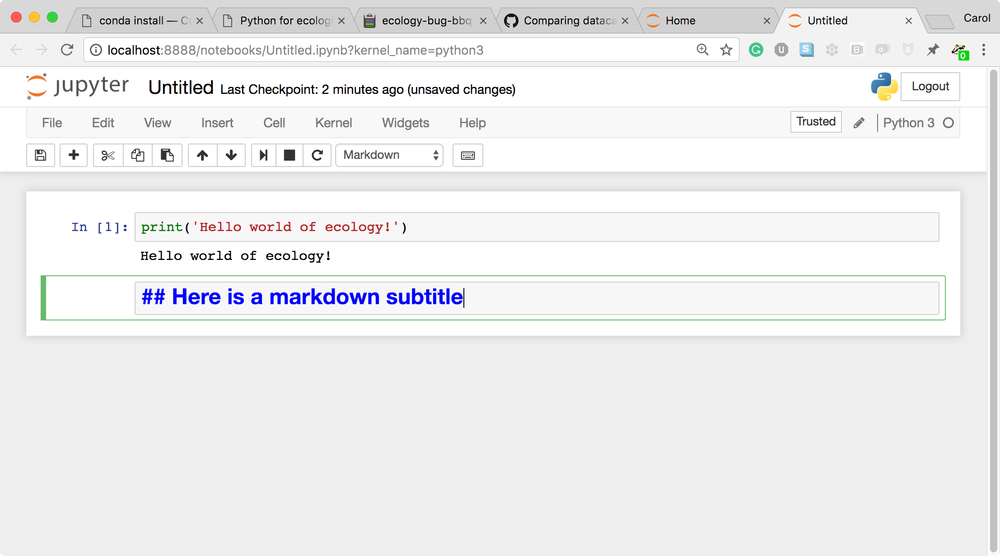

Screenshot of a Jupyter Notebook on quantum mechanics by Robert Johansson
Screenshot of a Jupyter Notebook on quantum mechanics by Robert Johansson
How the Jupyter notebook works
After typing the command jupyter notebook, the following happens:
- A Jupyter Notebook server is automatically created on your local machine.
- The Jupyter Notebook server runs locally on your machine only and does not use an internet connection.
-
The Jupyter Notebook server opens the Jupyter notebook client, also known as the notebook user interface, in your default web browser.
 The Jupyter notebook file browser
The Jupyter notebook file browser -
To create a new Python notebook select the “New” dropdown on the upper right of the screen.
 The Jupyter notebook file browser
The Jupyter notebook file browser -
When you can create a new notebook and type code into the browser, the web browser and the Jupyter notebook server communicate with each other.
 A new, blank Jupyter notebook
A new, blank Jupyter notebook -
Under the “help” menu, take a quick interactive tour of how to use the notebook. Help on Jupyter and key workshop packages is available here too.
 User interface tour and Help
User interface tour and Help - The Jupyter Notebook server does the work and calculations, and the web browser renders the notebook.
-
The web browser then displays the updated notebook to you.
-
For example, click in the first cell and type some Python code.
 A Code cell
A Code cell -
This is a Code cell (see the cell type dropdown with the word Code). To run the cell, type Shift+Return.
 A Code cell and its output
A Code cell and its output -
Let’s look at a Markdown cell. Markdown is a text manipulation language that is readable yet offers additional formatting. Don’t forget to select Markdown from the cell type dropdown. Click in the cell and enter the markdown text.
 A markdown input cell
-
To run the cell, type Shift+Return.
 A rendered markdown cell
A rendered markdown cell
This workflow has several advantages:
- You can easily type, edit, and copy and paste blocks of code.
- Tab completion allows you to easily access the names of things you are using and learn more about them.
- It allows you to annotate your code with links, different sized text, bullets, etc. to make information more accessible to you and your collaborators.
- It allows you to display figures next to the code that produces them to tell a complete story of the analysis.
How the notebook is stored
- The notebook file is stored in a format called JSON and has the suffix
.ipynb. - Just like HTML for a webpage, what’s saved in a notebook file looks different from what you see in your browser.
- But this format allows Jupyter to mix software (in several languages) with documentation and graphics, all in one file.
Notebook modes: Control and Edit
The notebook has two modes of operation: Control and Edit. Control mode lets you edit notebook level features; while, Edit mode lets you change the contents of a notebook cell. Remember a notebook is made up of a number of cells which can contain code, markdown, html, visualizations, and more.
Help and more information
Use the Help menu and its options when needed.